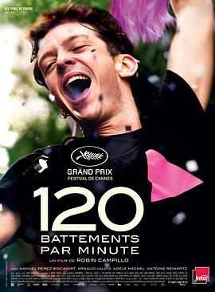

每分钟120击 / 120 battements par minute
又名：心动120(港) / BPM(台) / 心跳120 / 120拍的节奏 / 120 Beats Per Minute / BPM(Beats Per Minute)
作品信息
| 导演 | 罗宾·坎皮略 |
| 编剧 | 罗宾·坎皮略 / 菲利普·芒朱 |
| 主演 | 纳威尔·佩雷兹·毕斯卡亚特 / 阿诺德·瓦卢瓦 / 阿黛拉·哈内尔 / 安托万·赖纳茨 / 阿里尔·博伦斯坦 / 费利克斯·马利陶德 / 阿罗伊斯·索维奇 / 西蒙·博尔加德 / 梅迪·图尔 / 西蒙·古拉 / 科拉莉·吕西耶 / 凯瑟琳·维纳提尔 / 萨迪亚·本塔伊布 / 让-弗朗索瓦·奥古斯特 / 塞缪尔·丘林 |
| 类型 | 剧情 / 同性 |
| 制片国家/地区 | 法国 |
| 语言 | 法语 |
| 上映日期 | 2017-05-20(戛纳电影节) / 2017-08-23(法国) |
| 片长 | 143分钟 |
| IMDb | tt6135348 |
最后一次看到是 2026-08-12T21:12:12+08:00 · 豆瓣原页